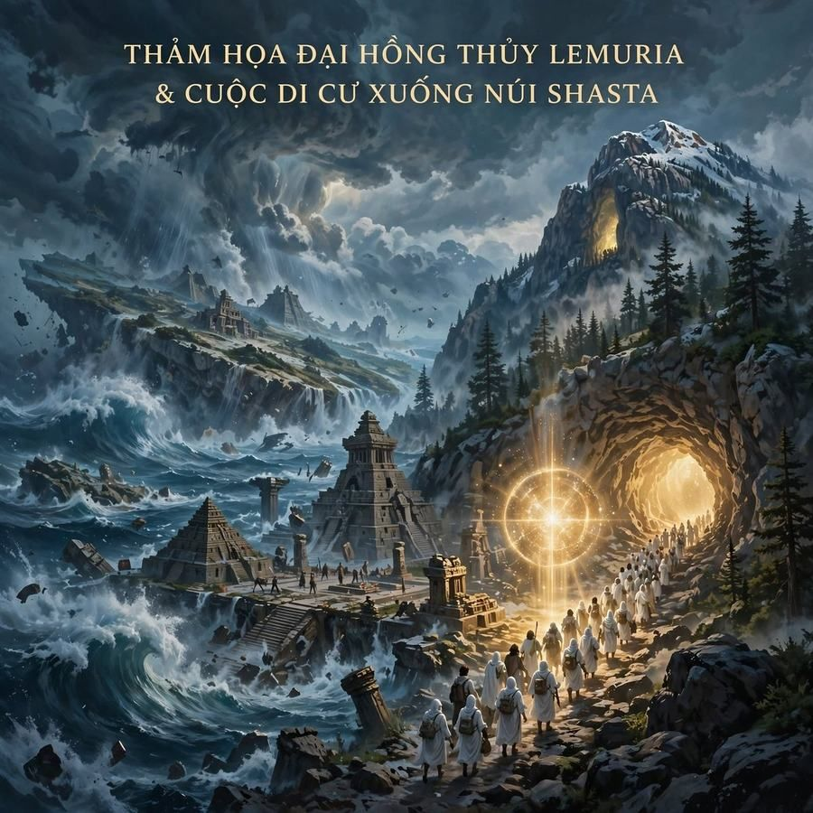
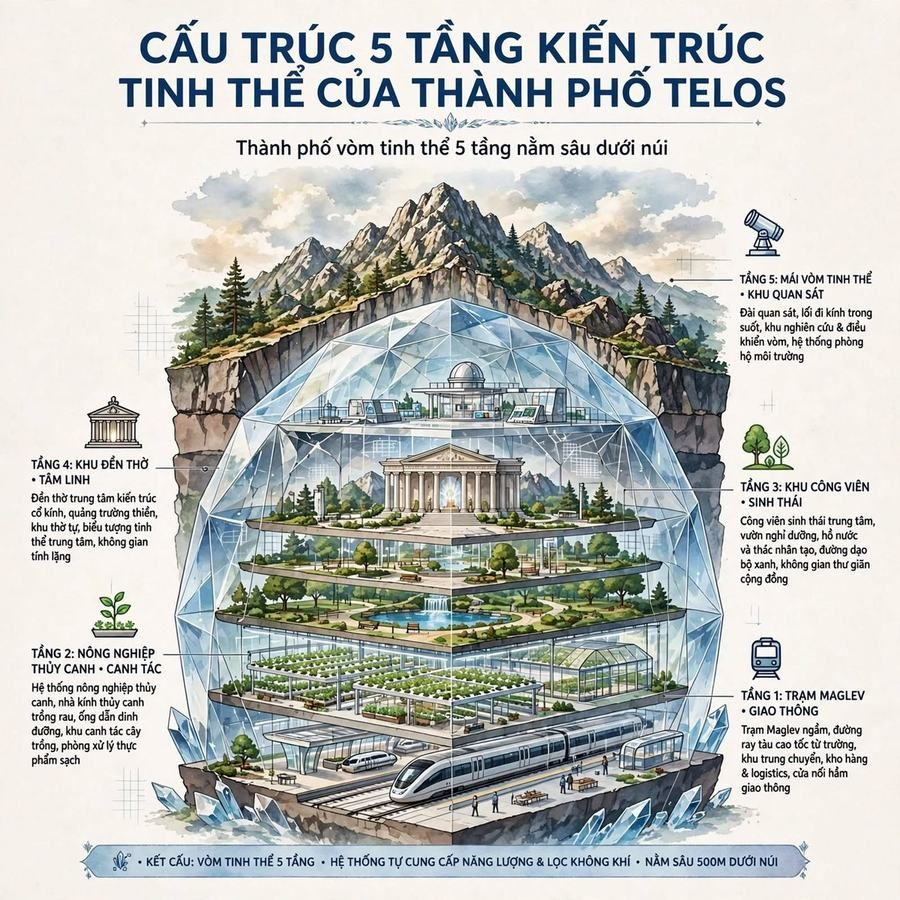
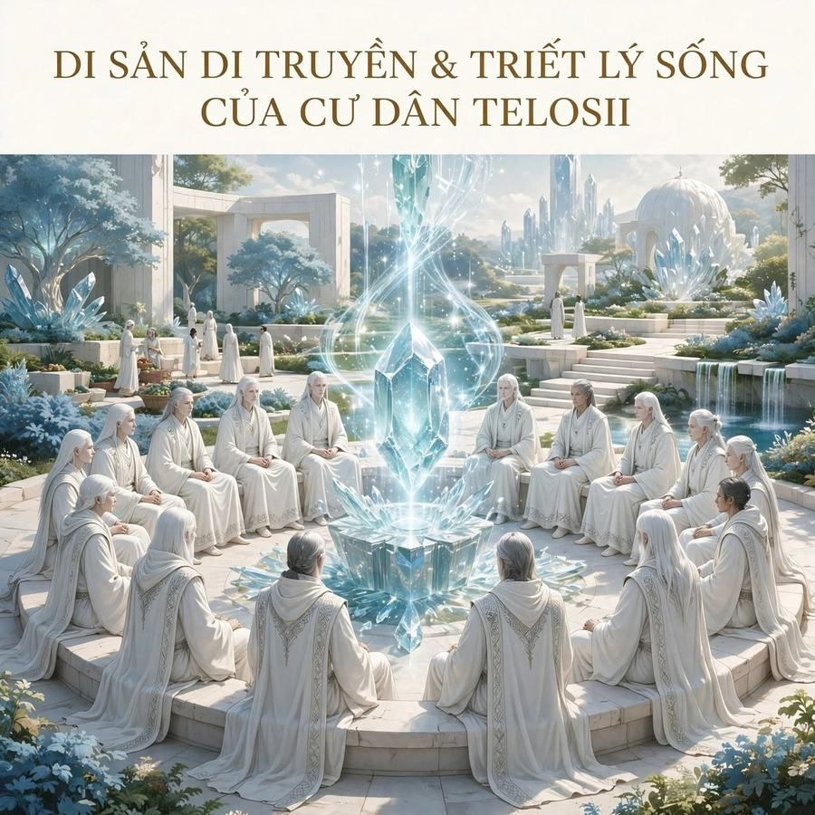
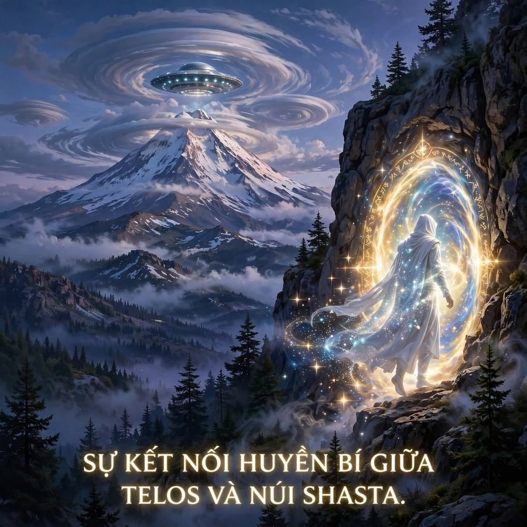
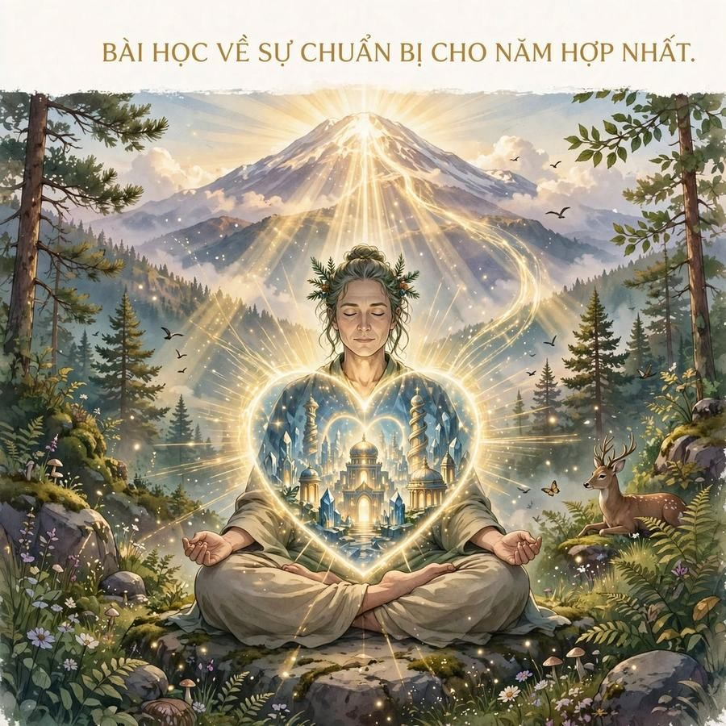

Trang chủ / Chuyên đề 4: Văn Minh Lòng Đất / Kỳ 35
Chuyên đề 4 · Kỳ 35 / 90
THÀNH PHỐ TELOS DƯỚI NÚI SHASTA & DI SẢN VĂN MINH LEMURIA (MU)

Ở Kỳ 4, chúng ta đã vạch trần ma trận u tối của Mạng lưới Căn cứ Quân sự Ngầm sâu (DUMBs) và chiến dịch quét sạch các cơ sở ngầm tiêu cực của Lực lượng Liên minh Trái Đất phối hợp với Liên Đoàn Thiên Hà.
Tách biệt hoàn toàn khỏi những công nghệ quân sự đen tối đó, hôm nay chúng ta sẽ đến với một trong những trung tâm ánh sáng rực rỡ và linh thiêng nhất của mạng lưới Agartha: Thành phố ngầm Telos nằm sâu dưới ngọn núi thiêng Shasta (thuộc bang California, Mỹ).
Thành phố Telos là gì? Làm thế nào mà cư dân của nền văn minh cổ đại Lemuria (Mu) lại có thể xây dựng nên một đô thị tinh thể ngầm tuyệt đẹp khi lục địa của họ chìm xuống Thái Bình Dương hàng chục ngàn năm trước? Cấu trúc 5 tầng kiến trúc ngầm cùng nguồn sáng từ trường bên trong Telos vận hành ra sao? Cuộc sống ở dải mật độ 4D–5D của cư dân Telosii mang lại bài học nhận thức gì cho con người bề mặt? Và tại sao ngọn núi Shasta lại trở thành chấn điểm từ trường huyền bí nhất trên Trái Đất?
Hãy cùng dấn thân vào Kỳ 5: Thành Phố Telos Dưới Núi Shasta & Di Sản Văn Minh Lemuria để mở ra trang sử thăng hoa của tri thức cổ đại!
✦ ✦ ✦1. THẢM HỌA ĐẠI HỒNG THỦY LEMURIA & CUỘC DI CƯ LỊCH SỬ XUỐNG NÚI SHASTA
Hàng chục ngàn năm trước, trên đại dương Thái Bình Dương rộng lớn từng tồn tại một đại lục thịnh vượng mang tên Lemuria (hay Mu) — nơi cư dân sống hòa hợp tuyệt đối với thiên nhiên, phát triển tâm thức cao cấp và làm chủ năng lượng tinh thể.
A. Cuộc Chiến Năng Lượng & Sự Sụp Đổ Của Lục Địa Mu
- Chiến Tranh Tần Số Với Atlantis: Vào giai đoạn suy thoái cổ đại, các cuộc xung đột năng lượng giữa giới tư tế Atlantis và Lemuria đã dẫn đến sự biến dạng của dải từ trường Trái Đất.
- Đại Hồng Thủy Nhấn Chìm Lục Địa: Hậu quả là các trận động đất đại địa chất và sóng thần khổng lồ đã nhấn chìm toàn bộ lục địa Lemuria xuống đáy Thái Bình Dương.
B. Quyết Định Xây Dựng Đô Thị Ngầm Trú Ẩn
- Tự Dự Đoán Trước Thảm Họa: Nhờ khả năng thấu thị và tiên tri của Hội đồng Tư tế, cư dân Lemuria đã biết trước sự sụp đổ của lục địa vài trăm năm.
- Chọn Núi Shasta Làm Tổ Của Ánh Sáng: Họ đã chọn ngọn núi lửa ngắt hoạt động Shasta — một chấn điểm từ trường mạnh mẽ nhất khu vực Bắc Mỹ — để tiến hành đào sâu vào lòng núi, kiến tạo nên thành phố ngầm Telos (mang ý nghĩa "Sự liên kết với tâm linh" hay "Mục đích tối cao").
- Di Tản 25.000 Cư Dân Tinh Hoa: Khi thảm họa xảy ra, khoảng 25.000 cư dân Lemuria tinh hoa cùng bộ sưu tập tri thức cổ đại đã chủ động rút xuống Telos, chính thức bảo tồn dòng máu và tri thức Lemuria cho đến tận ngày nay.

2. CẤU TRÚC 5 TẦNG KIẾN TRÚC TINH THỂ CỦA THÀNH PHỐ TELOS
Nằm sâu dưới lòng núi Shasta, Telos được thiết kế thành một đô thị ngầm dạng vòm tinh thể 5 tầng khổng lồ, chứa đựng khoảng 1,5 triệu cư dân sống ở dải mật độ 4D–5D.
A. Tầng 1: Trung Tâm Hành Chính & Đền Thờ Tinh Thể Adama
- Đền Thờ Tinh Thể Trung Tâm: Tầng trên cùng là trung tâm tâm linh và quản lý của Telos. Nơi đây đặt Đền thờ Tinh thể Trắng, có sức chứa hơn 50.000 người, do Đại Tư tế Adama dẫn dắt.
- Cung Điện Chính Trị & Thư Viện Cổ: Nơi lưu giữ các cuộn thư tịch bằng kim loại nhẹ và đĩa tinh thể lưu trữ toàn bộ lịch sử nguyên thủy của Trái Đất.
B. Tầng 2: Khu Vực Sản Xuất, Giáo Dục & Văn Hóa
- Trường Học & Viện Nghiên Cứu Lượng Tử: Nơi đào tạo nhận thức, nghệ thuật, âm nhạc và kỹ thuật điều biến năng lượng tinh thể cho cư dân.
- Cơ Sở Chế Tạo Kháng Hấp Dẫn: Sản xuất các thiết bị sinh hoạt, quần áo tự thêu dệt bằng sợi quang phổ và các phương tiện di chuyển đệm từ.
C. Tầng 3: Nông Nghiệp Hydroponic Tinh Thể
- Hệ Thống Trồng Trọt Không Cần Đất: Toàn bộ thực phẩm của Telos được cung cấp từ tầng nông nghiệp thủy canh tự động. Cây trồng được nuôi dưỡng bằng nước tinh khiết chứa khoáng chất và chiếu sáng bởi dải quang phổ tần số cao.
- Thực Phẩm Giàu Sinh Lực: Trái cây và rau củ tại đây có kích thước lớn, dồi dào sinh lực (Prana) và giúp cư dân không bao giờ bị bệnh tật hay lão hóa.
D. Tầng 4: Công Viên Tự Nhiên & Môi Trường Sinh Thái
- Khu Bảo Tồn Động Vật Hoang Dã: Một không gian thiên nhiên rộng lớn với hồ nước, thác nước và rừng cây xanh tốt. Nơi đây bảo tồn nhiều loài động vật đã tuyệt chủng trên bề mặt Trái Đất.
- Sống Hòa Hợp Tuyệt Đối: Ở dải mật độ 5D, các loài động vật ăn thịt và ăn cỏ sống hòa thuận bên nhau mà không có sự săn đuổi hay sợ hãi.
E. Tầng 5: Trạm Giao Thông Tàu Đệm Từ Maglev
- Kết Nối Với Mạng Lưới Agartha: Tầng dưới cùng là trung tâm giao thông kết nối trực tiếp với hệ thống đường ống chân không Maglev, giúp cư dân Telos di chuyển đến các thành phố ngầm khác trên toàn cầu (như Posid dưới Đại Tây Dương hay Shambhala dưới Himalaya) chỉ trong vài chục phút.

3. DI SẢN DI TRUYỀN & TRIẾT LÝ SỐNG CỦA CƯ DÂN TELOSII
Cư dân Telosii chính là những người bảo tồn trọn vẹn di sản di truyền và phong cách sống nguyên thủy của nền văn minh Lemuria.
A. Diện Mạo Sinh Học & Tuổi Thọ Vĩnh Cửu
- Chiều Cao Vượt Trội: Cư dân Telosii sở hữu chiều cao trung bình từ 2,1m đến 2,4m, da sáng rực rỡ, mái tóc dầy và đôi mắt sâu thẳm giàu lòng từ bi.
- Tuổi Thọ Hàng Ngàn Năm: Nhờ sống trong dải tần số 5D, cơ thể họ hoàn toàn không bị lão hóa. Một cư dân Telosii có thể sống trong cùng một thể xác trẻ trung suốt hàng ngàn năm mà không gặp phải bệnh tật.
B. Triết Lý Sống Dựa Trên Tình Yêu Thương & Năng Lượng Tự Do
- Không Có Tiền Tệ Hay Nợ Nần: Xã hội Telos vận hành hoàn toàn dựa trên sự chia sẻ tự nguyện. Năng lượng sinh hoạt được cung cấp miễn phí từ các lò phản ứng tinh thể Điểm Không.
- Quản Trị Bằng Hội Đồng 12 Bậc Thầy: Đô thị được điều hành bởi Hội đồng 12 Bậc Thầy Minh Triết (gồm 6 nam và 6 nữ) phối hợp với Đại Tư tế Adama, quyết định mọi việc dựa trên sự đồng thuận và lợi ích chung.

4. SỰ KẾT NỐI HUYỀN BÍ GIỮA TELOS VÀ NÚI SHASTA TRÊN BỀ MẶT
Ngọn núi Shasta từ lâu đã được coi là một trong những chấn điểm từ trường (Root Chakra / Luân xa Gốc) mạnh mẽ nhất của Trái Đất.
A. Hiện Tượng Mây Đĩa Bay (Lenticular Clouds) & Cổng Ánh Sáng
- Lớp Màng Ngụy Trang Thiên Nhiên: Xung quanh đỉnh núi Shasta thường xuyên xuất hiện những vòm mây hình đĩa độc đáo. Thực chất, đây là lớp màng ngụy trang tần số do Telos phát ra để che giấu sự ra vào của các phi thuyền đĩa bay tinh thể.
- Cổng Sao Địa Từ Cực Mạnh: Núi Shasta sở hữu dải xung từ trường cao tần, cho phép các sinh mệnh Telosii hoặc tàu vũ trụ dễ dàng dịch chuyển giữa các chiều không gian mà người thường không thể nhìn thấy bằng mắt 3D.
B. Những Cuộc Gặp Gỡ Với Sinh Mệnh Telosii Mặc Áo Trắng
- Xuất Hiện Trước Những Người Có Tần Số Tương Thích: Trong nhiều thập kỷ qua, nhiều nhà leo núi và du khách trên núi Shasta đã báo cáo về việc nhìn thấy những người cao lớn, mặc áo dài trắng tinh khôi, tỏa ra phong thái vô cùng bình an và từ bi rồi đột ngột biến mất vào các vách đá.

5. LỜI KẾT KỲ 5: BÀI HỌC VỀ SỰ CHUẨN BỊ CHO NĂM HỢP NHẤT
Kỳ 5 của chuyên đề 4 khép lại mang đến lời thức tỉnh sâu sắc từ thành phố ngầm Telos:
- Di Sản Lemuria Vẫn Đang Sống Động: Lemuria không bị xóa sổ hoàn toàn; di sản Tình Yêu Thương và Tri Thức Tinh Thể của họ vẫn đang được bảo tồn vẹn nguyên dưới núi Shasta, chờ đợi ngày nhân loại bề mặt nâng cao nhận thức để đón nhận.
- Kích Hoạt Tần Số Nâng Cấp Bản Thể: Để kết nối với dải năng lượng của Telos, chúng ta không cần phải đến tận núi Shasta. Bằng việc thực hành lòng từ bi, thiền định định tâm và sống hòa hợp với thiên nhiên, bạn đang tự mở ra "cổng Telos" ngay trong Trái Tim của chính mình!
